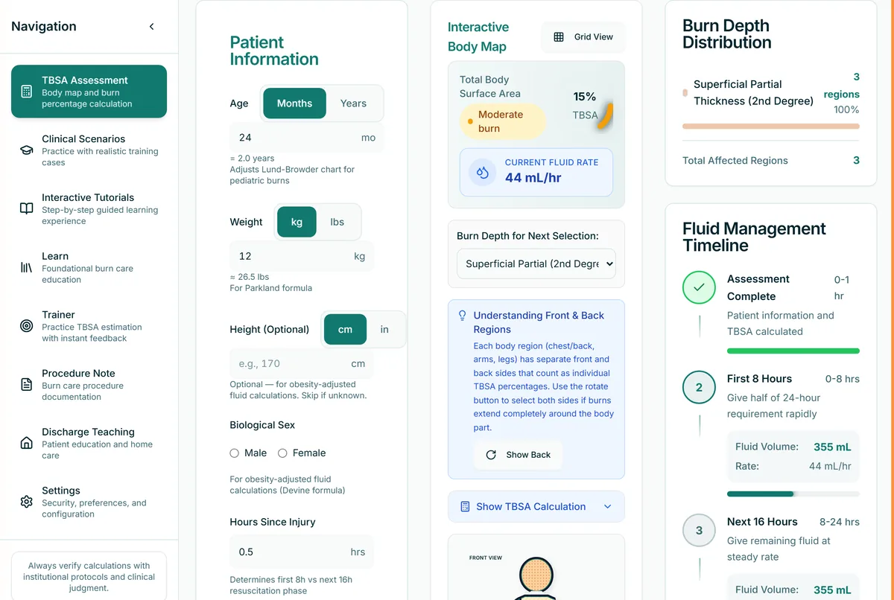
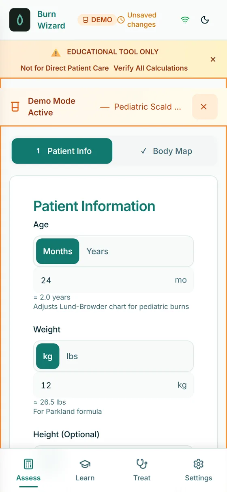
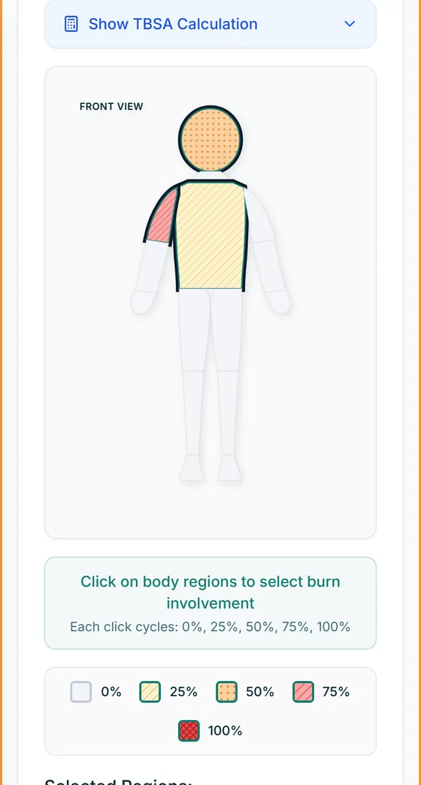

Burn Wizard
A burn assessment trainer for nurses. Map the burn on an age-adjusted body diagram, get the surface area and the fluid plan, and see how each number was reached. It works offline, in English or Spanish.

The problem
Burn resuscitation runs on two calculations made under pressure: what percentage of the body is burned, and how much fluid that child needs in the first 24 hours. Total body surface area feeds the Parkland formula directly, so an error in surface area carries straight into the fluid volume.
Children make it harder. Their body proportions differ from adults' and shift with age, which is why the rule of nines fails in children and the Lund-Browder chart exists. Nurses learn it from a static paper chart and do the arithmetic under time pressure.
What I built
A trainer that walks through Lund-Browder surface area mapping and Parkland fluid calculation, then checks the result against burn center referral criteria. It runs offline on a phone, with an eight-chapter teaching curriculum. Interface and teaching content are both fully localized to Latin American Spanish (es-419).
How it works
An offline-first progressive web app, wrapped for iOS. Age-adjusted Lund-Browder tables drive the surface area math, and a teaching engine explains each step rather than returning a bare number.
React 19 and TypeScript on Vite, Tailwind for styling, Zustand for state, Workbox for the service worker, and Tauri 2 for the iOS and desktop wrappers. Locally stored session data is encrypted at rest with AES-256-GCM. More than 1,700 automated tests under Vitest and Playwright are weighted toward the calculation paths, because a wrong fluid rate is the kind of error that matters.
Screens


All screens use the app's built-in demo scenario. No patient data.
Where it stands
Live on the App Store since March 18, 2026, and free on the web; the current version is 1.5.1, published under Martin Apps LLC.
It is labeled an educational tool and makes no clinical decision support claim. The app carries that disclaimer in-product, which is a deliberate constraint on what it is allowed to say rather than a legal footnote.